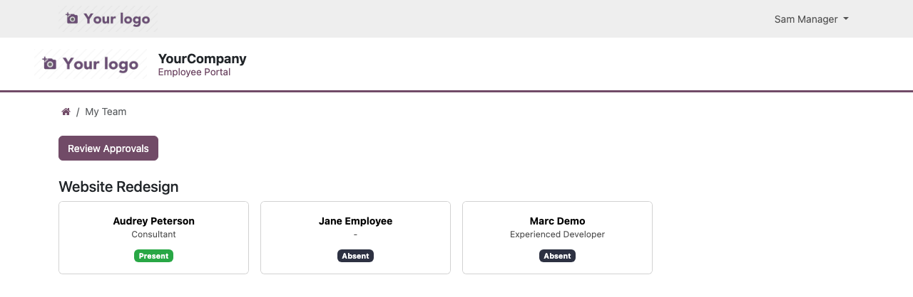
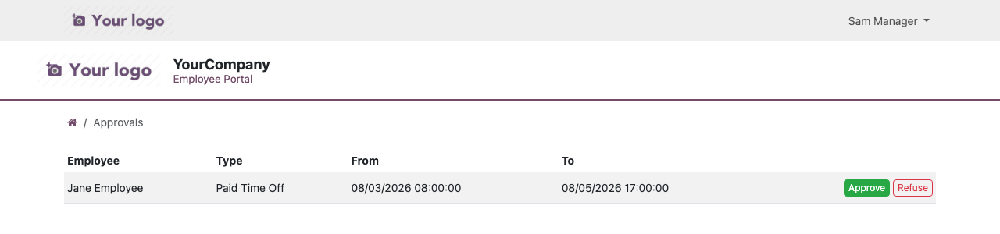
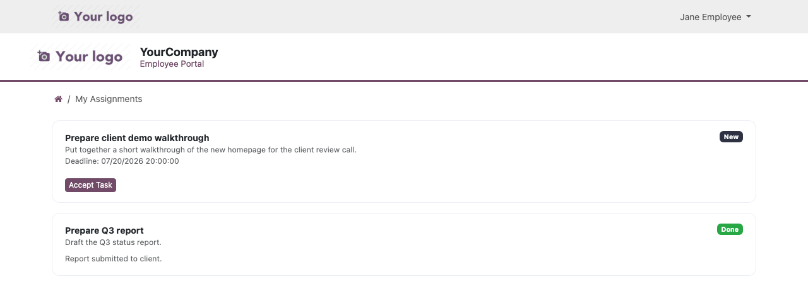

Portal Manager – My Team

Portal Manager – Approvals

Employee – My Assignments
HR self-service for employees who don't need a full internal Odoo license, plus a client-facing team-oversight role — all from the standard Odoo portal.

Portal Manager – My Team

Portal Manager – Approvals

Employee – My Assignments
Odoo's own Employee and Time Off apps require an internal user license. If most of your workforce only ever needs to check a leave balance, request time off, or clock in and out, this app gives them everything they need through the free Portal user type instead — no extra license required.
On top of that, if some of your projects are overseen by an external contact (a client, a site manager, a department head) who isn't an Odoo user at all, this app gives that person a lightweight, project-scoped Portal Manager role: they can see their project's team status for the day and approve time-off requests, entirely from the portal, with zero Odoo licenses on their side either.
/my| My Profile | Edit private contact and emergency information. |
| My Time Off | See remaining balance, submit and cancel leave requests, follow the approval stage live. |
| My Attendances | Check in / check out and review monthly attendance from the portal. |
| My Tasks | Read-only list of Project tasks assigned to the employee. |
| My Assignments | Accept lightweight tasks assigned by the project's Portal Manager, post status updates, get a daily email reminder until marked done. |
| My Team | Card-grid of the project's employees with today's status: present, on leave, on permission or absent. |
| Approvals | First-stage approval on the team's time off / permission requests before internal HR finalizes them. |
| Team Tasks | Assign lightweight tasks with a deadline to the project's employees and track progress. |
Install the companion Employee & Client Self-Service Portal – Payslips module (requires Odoo Enterprise's Payroll app) to add a "My Payslips" page where employees can view and download their finalized payslips.
hr.employee record, use the Grant Portal Access button to create (or link) a portal user for that employee.project.project, set the Portal Manager field to the portal user who should oversee that project's employees.hr.employee working on that project, set Portal Project to the same project./my, and the Portal Manager sees a "My Team" tile.